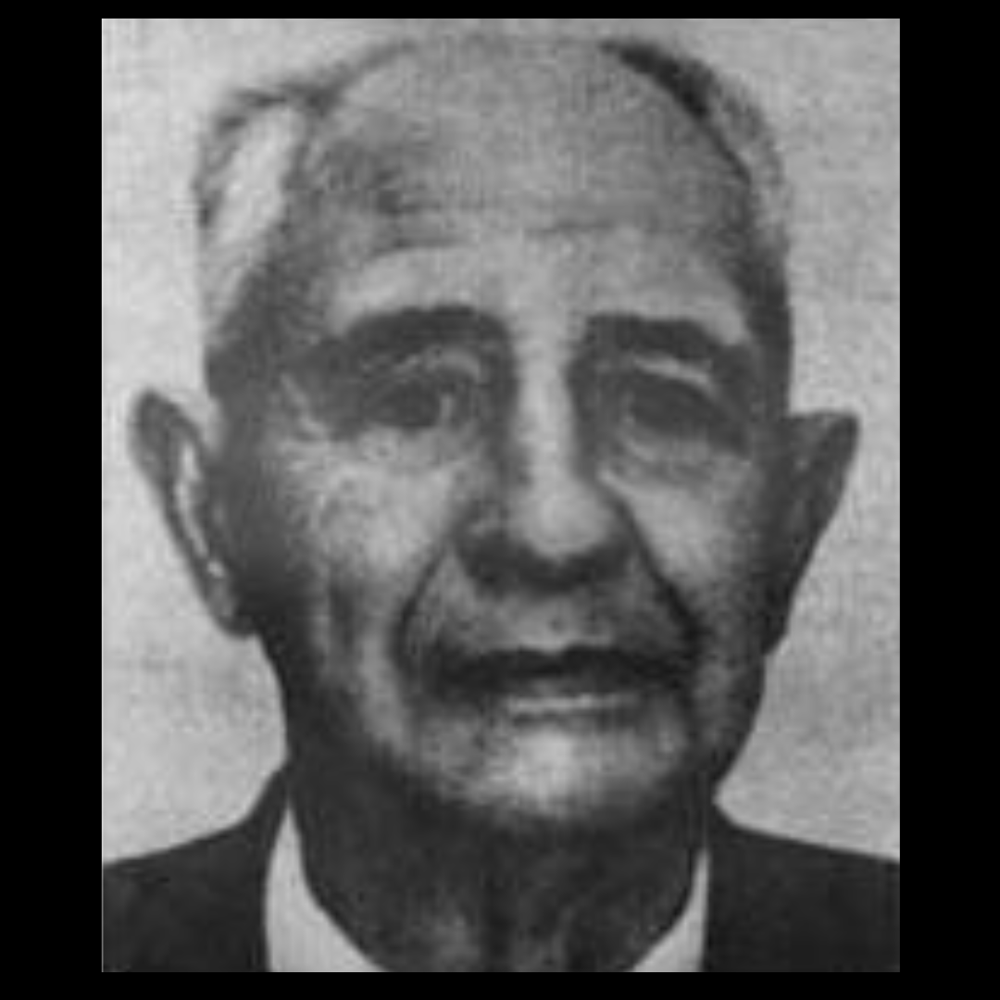

A professor from the University of California, James Bedford is the first man to be cryogenically frozen, technically he is still preserved and assuming he were to be revived in the future, it would make him the oldest living human born in 1893.
The foundation for cryonics emerged in the 1940s-1950s, scientists had discovered that glycerol could protect cells from freezing damage. What started with the revival of sperm cells came blood cells and eventually embryos. If biological material could be revived, maybe larger structures could be, maybe one day, a mammal could be revived.
Bedford became interested in cryonics, at the time, the book The Prospect of Immortality by Robert Ettinger written in 1962 had largely expanded on the moral and speculative new emerging technology that was, cryogenics. Bedford also had kidney cancer that had spread to his lungs and so actively chose to make this decision for a shot at revival.
When James Bedford died in 1967, a small team of volunteers on standby began the preservation process, the first preservation didn't go smoothly; the team were mostly amateurs and volunteers, the nurse reportedly had to run up and down the area collecting ice from neighbours home freezers. The process involves packing the body on ice, injecting the patient with a cryoprotectant to prevent ice crystal damage where he was placed in a storage vessel where he still remains to this day in liquid nitrogen.
Robert Nelson (the man who organised Bedford's preservation) later went on to let nine other cryonics patients thaw out and decompose after funding ran out in what was known as the Chatsworth scandals.
Bedfords body only barely survived due to his family taking care of him and eventually transferring him to Alcor where Bedford remains in Scottsdale, Arizona. Even if Bedford is never revived, certain techniques have been massively improved since this first cryopreservation.
As crude as the process may be, some people bet on it for a chance at awaking in the future once technology has revived him, there still remains scepticism surrounding the numerous reversals that would need to be done in order to not only 'fix' the prior issues that the people experienced both before death and during cryogenics but also reviving someones brain from dead to alive, not to mention the issue of memory.
As of right now in 2026, approximately 700+ people globally are cryopreserved with many more scheduled to go through the process. While it's argued that the science is speculative, some really do pin hope on future revival when technology is capable of doing so.